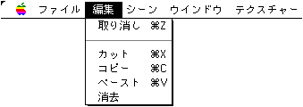

★Graphic Tools Guide
★3Dエディタユーザーズマニュアル
★Graphic Tools Guide
★3Dエディタユーザーズマニュアル
▲
戻る｜
進む▼
3Dエディタユーザーズマニュアル/2.使用方法
■編集メニュー

- 『3D Editor』では使用される機会の少ないメニューですが、マテリアルの設定に関するコピーペースト時に大きな力を発揮します。また、マニュアルによる３角形ポリゴンの結合時にはやり直しメニューが使用できます。
▲
戻る｜
進む▼
★Graphic Tools Guide
★3Dエディタユーザーズマニュアル
Copyright SEGA ENTERPRISES, LTD., 1997